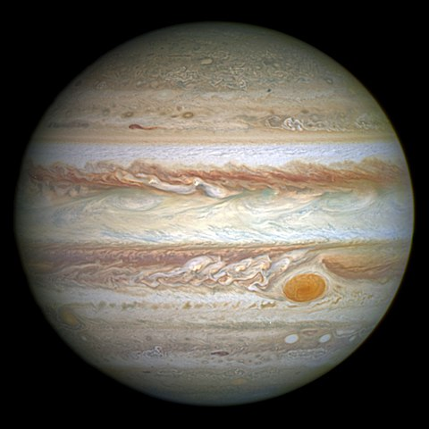
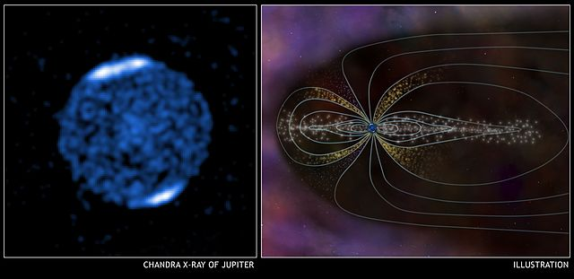
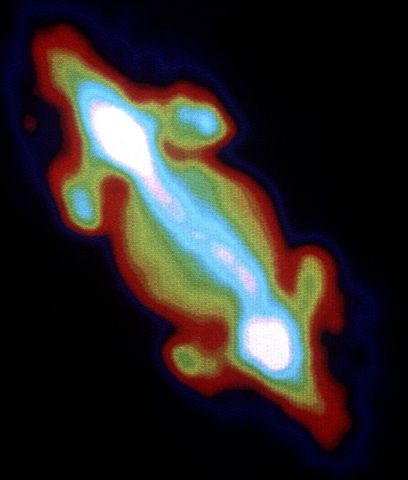
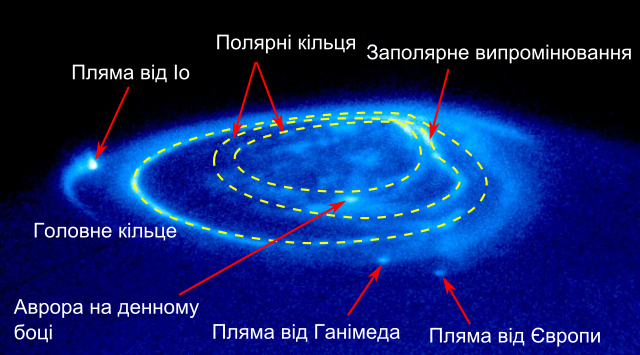
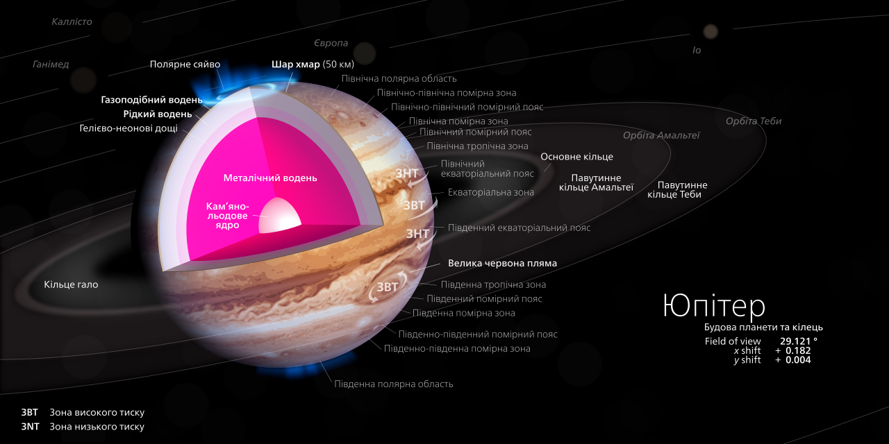
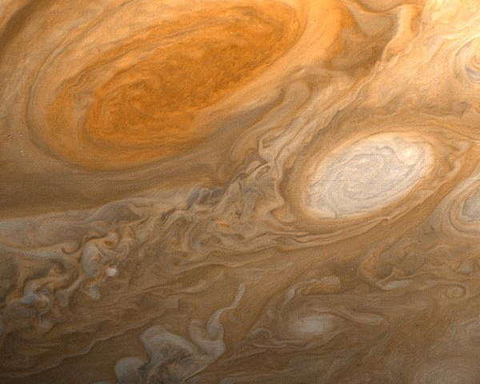
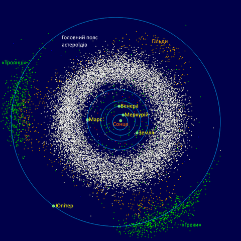

Юпі́тер — п'ята від Сонця та найбільша планета Сонячної системи. Відстань Юпітера від Сонця змінюється в межах від 4,95 до 5,45 а. о. (740—814 млн км), середня відстань 5,203 а. о. (778 млн км). Разом із Сатурном, Ураном і Нептуном Юпітер класифікують як газового гіганта.
Юпітер більш ніж удвічі масивніший за всі інші планети разом узяті; він майже в 318 разів масивніший за Землю. Однак маса Юпітера недостатня, аби перетворитися на зорю, подібну до Сонця: для цього його маса мала б бути ще в 70—80 разів більшою. Тим не менш у надрах Юпітера відбуваються процеси з досить потужною енергетикою: теплове випромінювання планети, еквівалентне 4·1017 Вт, що приблизно вдвічі перевищує енергію, яку ця планета отримує від Сонця. Вірогідним джерелом такої енергії є гравітаційне стиснення.
Планета була відома людям із глибокої давнини, що знайшло своє відображення в міфології і релігійних віруваннях різних культур: месопотамської, вавилонської, грецької та інших. Сучасна назва Юпітера походить від імені давньоримського верховного бога-громовержця.
Низка атмосферних явищ на Юпітері — як-от шторми, блискавки, полярні сяйва, — мають масштаби, що на порядки перевершують земні. Примітним утворенням в атмосфері є Велика червона пляма — велетенський шторм, відомий ще з XVII століття.
Юпітер має 79 супутників, найбільші з яких — Іо, Європа, Ганімед і Каллісто — було відкрито 1610 року. Останні 12 було відкрито лише у 2018 році. Дослідження Юпітера здійснюють за допомогою наземних і орбітальних телескопів, з 1970-х років до планети було відправлено 8 міжпланетних апаратів НАСА: «Піонери», «Вояджери», «Галілео» та ін. У 2011 році було запущено автоматичну міжпланетну станцію Юнона (англ. Juno, також Jupiter Polar Orbiter, розроблена НАСА і Лабораторією реактивного руху), яка розпочала детальні дослідження Юпітера 4 липня 2016 року.
Спостереження та їх особливості
Відстань між Юпітером і Землею коливається від 588 до 967 млн км (видимі кутові розміри Юпітера при цьому змінюються від 50,1″ до 29,8″). Видима зоряна величина змінюється від −2,94m до −1,6m.
В інфрачервоній ділянці спектра лежать лінії молекул H2 і He, а також лінії багатьох інших елементів. Кількість перших двох несе інформацію про походження планети, а кількісний та якісний склад інших — про її внутрішню еволюцію.
В інфрачервоній ділянці спектра лежать лінії молекул H2 і He, а також лінії багатьох інших елементів. Кількість перших двох несе інформацію про походження планети, а кількісний та якісний склад інших — про її внутрішню еволюцію.
Однак молекули водню й гелію не мають дипольного моменту, отже, абсорбційні лінії[6] цих елементів непомітні доти, доки не починається їхня іонізація. Крім того, ці лінії утворюються в найвищих шарах атмосфери і не несуть інформацію про глибші шари. Тому надійніші дані про кількість гелію й водню на Юпітері отримано зі спускового апарата «Галілео».
Поки що не можна з упевненістю сказати, які процеси відбуваються в атмосфері Юпітера й наскільки сильно вони впливають на хімічний склад — як у внутрішніх областях, так і в зовнішніх шарах. Це створює певні труднощі детальної інтерпретації спектра. Проте вважається, що всі процеси, здатні так чи інакше впливати на велику кількість елементів, є локальним й досить обмеженими, отже, вони не здатні глобально змінити розподіл речовини.
Також Юпітер випромінює (здебільшого в інфрачервоній ділянці спектра) на 60 % більше енергії, ніж отримує від Сонця. Енергія виділяється за рахунок гравітаційного стиснення планети, внаслідок чого розмір Юпітера зменшується приблизно на 2 см за рік.
Гамма-діапазон
Випромінювання Юпітера в гамма-діапазоні пов'язано з полярними сяйвами, а також із випромінюванням диска. Уперше зареєстровано в 1979 році космічною обсерваторією імені Ейнштейна. На Землі ділянки полярних сяйв у рентгенівському та ультрафіолетовому діапазоні практично збігаються, проте на Юпітері це не так. Ділянка рентгенівських полярних сяйв розташована набагато ближче до полюса, ніж ультрафіолетових. Ранні спостереження виявили пульсацію випромінювання з періодом у 40 хвилин, однак у пізніших спостереженнях ця залежність проявляється набагато гірше.
Очікувалося, що рентгенівський спектр авроральних сяйв на Юпітері схожий на рентгенівський спектр комет, проте, як показали спостереження Чандра, це не так. Спектр складається з емісійних ліній із піками поблизу 650 еВ (кисневі лінії), 653 еВ та 774 еВ (лінії OVIII), а також 561 еВ і 666 еВ (OVII). Існують також лінії випромінювання нижчих енергій у спектральній ділянці від 250 до 350 еВ. Можливо, вони належать сірці або вуглецю.
Гамма-випромінювання, не пов'язане з полярним сяйвом, вперше було виявлено при спостереженнях на ROSAT 1997 року. Спектр схожий зі спектром полярних сяйв, однак у районі 0,7—0,8 кеВ. Особливості спектра добре описуються моделлю корональної плазми з температурою 0,4—0,5 кеВ із сонячною металічністю, з додаванням емісійних ліній Mg10+ та Si12+. Існування останніх, можливо, пов'язано з сонячною активністю в жовтні-листопаді 2003 року.
Спостереження космічної обсерваторії XMM-Newton показали, що випромінювання диска в гамма-спектрі — це відбите сонячне рентгенівське випромінювання. На відміну від полярних сяйв, ніякої періодичності змін інтенсивності випромінювання на масштабах від 10 до 100 хв виявлено не було.
Радіоспостереження
Юпітер — найпотужніше (після Сонця) радіоджерело Сонячної системи в дециметровому — метровому діапазонах довжин хвиль. Радіовипромінювання має спорадичний характер і в максимумі сплеску досягає 106 янських.
Сплески відбуваються в діапазоні частот від 5 до 43 МГц (найчастіше — поблизу 18 МГц), в середньому їх ширина становить приблизно 1 МГц. Тривалість сплеску невелика: від 0,1—1 с (іноді — до 15 с). Випромінювання дуже поляризоване, особливо по колу, ступінь поляризації сягає 100 %. Спостерігається модуляція випромінювання близьким супутником Юпітера Іо, що обертається всередині магнітосфери: ймовірність сплеску більша, коли Іо перебуває поблизу елонгації щодо Юпітера. Монохроматичний характер випромінювання свідчить про виділену частоту, швидше за все — гірочастоту. Висока температура яскравості (іноді сягає 1015K) потребує залучення ефектів типу мазерів.
Радіовипромінювання Юпітера в міліметровому — короткосантиметровому діапазонах має суто тепловий характер, хоча відповідна температура дещо вища рівноважної, що означає потік тепла з надр. Починаючи з хвиль ~9 см яскравісна температура (Tb) зростає — з'являється нетеплова складова, пов'язана з синхротронним випромінюванням релятивістських частинок із середньою енергією ~ 30 МеВ у магнітному полі Юпітера; на хвилі 70 см Tb сягає значення ~ 5× 104 K. Джерела випромінювання розташовані по обидва боки планети у вигляді двох протяжних лопатей, що вказує на магнітосферне походження випромінювання.
Магнітні поля
Юпітер має величезне магнітне поле, що складається з двох компонетних полів: дипольного (як поле Землі), що сягає відстані до 1,5 млн км від Юпітера, і недипольного, що займає іншу частину магнітосфери. Напруженість магнітного поля на поверхні планети 10—15 ерстед, тобто у 20 разів більше, ніж на Землі. Магнітосфера Юпітера у напрямку від Сонця сягає на 650 млн км (за орбіту Сатурна!), але в напрямку до Сонця вона майже в 40 разів менша. Магнітне поле захоплює сонячний вітер, утворюючи на відстані 177 000 км від планети радіаційний пояс, приблизно в 10 разів потужніший від земного. Він розташований між кільцем Юпітера й найвищими шарами атмосфери.
Магнітометричні виміри показали істотні збурення магнітного поля Юпітера поблизу Європи й Каллісто, що не може бути пояснено існуванням у цих супутників внутрішнього ядра з феромагнітної речовини, оскільки в такому разі магнітне поле, спадало б пропорційно кубу відстані від супутника, і було б у вісім разів слабшим. Одне з можливих пояснень — поява в оболонках планет вихрових електричних струмів, магнітне поле яких викривлює поле планети-гіганта. Ці струми можуть поширюватися в провідній рідині, наприклад у воді з солоністю 37,5 ‰ (близько до солоності океанів Землі), що лежить під поверхнею небесного тіла; існування такого океану на Європі вважається вірогідним. Вихрові струми, що забезпечують спостережувані варіації магнітного поля, можуть утворюватися в шарі води товщиною трохи більше ніж 10 км.
Магнітосфера Юпітера утримує навколишню плазму у вузькому шарі, напівтовщина якого близько двох радіусів планети поблизу екватора еквівалентного магнітного диполя. Плазма обертається разом із Юпітером, періодично накриваючи його супутники. У системах відліку, зв'язаних із супутниками, магнітне поле пульсує з амплітудами 220 нТл (Європа) і 40 нТл (Каллісто), наводячи вихрові струми в провідних шарах супутників. Ці струми генерують вихрові магнітні поля також дипольної конфігурації, що накладаються на власні поля цих супутників. Періоди зміни магнітних полів становлять 11,1 і 10,1 години для Європи й Каллісто, відповідно.
Радіаційні пояси
Юпітер має потужні радіаційні пояси. При зближенні з Юпітером «Галілео» отримав дозу радіації, що у 25 разів перевищувала смертельну дозу для людини. Випромінювання радіаційного пояса Юпітера в радіодіапазоні вперше було виявлено 1955 року. Радіовипромінювання має синхротронний характер. Електрони в радіаційних поясах мають величезну енергію, що дорівнює близько 20 МеВ, при цьому зондом «Кассіні» було виявлено, що щільність електронів у радіаційних поясах Юпітера нижча, ніж очікувалося. Потік електронів у радіаційних поясах Юпітера може становити серйозну небезпеку для космічних апаратів через високий ризик пошкодження апаратури радіацією. Радіовипромінювання Юпітера не є строго однорідним і постійним — як по часу, так і по частоті. Середня частота такого випромінювання, за даними досліджень, становить порядку 20 МГц, а увесь діапазон частот — від 5—10 до 39,5 МГц.
Юпітер оточений іоносферою протяжністю 3000 км.
Полярні сяйва
Юпітер має яскраві стійкі сяйва навколо обидвох полюсів. На відміну від таких же на Землі, що з'являються в періоди підвищеної сонячної активності, полярні сяйва Юпітера є постійними, хоча їхня інтенсивність змінюється. Вони складаються з трьох головних компонентів: основна та найяскравіша область порівняно невелика (менше ніж 1000 км у ширину), розташована приблизно на 16° від магнітних полюсів; гарячі плями — сліди магнітних силових ліній, що сполучають іоносфери супутників з іоносферою Юпітера, та області короткочасних викидів, розташованих всередині основного кільця. Викиди полярних сяйв були виявлені майже у всіх частинах електромагнітного спектра від радіохвиль до рентгенівських променів (до 3 кеВ), однак вони найяскравіші в середньому інфрачервоному діапазоні (довжина хвилі 3—4 мкм і 7—14 мкм) та глибокій ультрафіолетовій області спектра (довжина хвилі 80—180 нм).
Положення основних авроральних кілець стійке, як і їхня форма. Однак їхнє випромінювання сильно модулюється тиском сонячного вітру — чим сильніший вітер, тим слабші полярні сяйва. Стабільність сяйв підтримується великим притоком електронів, прискорюваних за рахунок різниці потенціалів між іоносферою та магнітодиском. Ці електрони породжує струм, який підтримує синхронність обертання в магнітодиску. Енергія цих електронів 10 — 100 кеВ; проникаючи глибоко всередину атмосфери, вони іонізують та збуджують молекулярний водень, викликаючи ультрафіолетове випромінювання. Крім того, вони розігрівають іоносферу, чим пояснюється сильне інфрачервоне випромінювання полярних сяйв і частково нагрівання термосфери.
Гарячі плями пов'язані з трьома галілеєвими супутниками: Іо, Європою та Ганімедом. Вони виникають через те, що плазма, яка обертається, сповільнюється поблизу супутників. Найяскравіші плями належать Іо, оскільки цей супутник є головним поставником плазми, плями Європи та Ганімеда набагато слабші. Яскраві плями всередині основних кілець, які з'являються час від часу, ймовірно, пов'язані з взаємодією магнітосфери та сонячного вітру.
Велика рентгенівська пляма
Орбітальним телескопом «Чандра» у грудні 2000 року на полюсах Юпітера (переважно на північному полюсі) виявлене джерело пульсуючого рентгенівського випромінювання, назване Великою рентгенівською плямою. Причини цього випромінювання поки що не з'ясовані.
Внутрішня будова
Внутрішню будову Юпітера можна уявити у вигляді оболонок із густиною, що зростає в напрямку до центра планети. На дні атмосфери завтовшки 1500 км розташований шар газорідкого водню завтовшки близько 7000 км. На рівні 0,88 радіуса планети, де тиск становить 0,69 Мбар, а температура — 6200 °C, водень переходить у рідкомолекулярний стан і ще через 8000 км — у рідкий металевий стан. Поряд із воднем і гелієм шари містять невелику кількість важких елементів. Внутрішнє ядро діаметром 25000 км — металосилікатне, із часткою води, аміаку й метану, оточене гелієм. Температура в центрі становить 23000 градусів, а тиск — 50 Мбар.
Вимірювання з КА підтвердили існування значного теплового потоку з надр Юпітера, хоча й трохи меншого, ніж за даними наземних спостережень. Тобто, Юпітер випромінює в космос приблизно вдвічі більше енергії, ніж одержує від Сонця. З цим пов'язано згадане перевищення ефективної температури над рівноважною. Механізм генерації внутрішнього тепла до кінця незрозумілий. Вірогідними джерелами може бути стиснення (~1 мм на рік), що супроводжується виділенням гравітаційної енергії; безперервний перехід молекулярного водню в металевий; «осадження» гелію з водневогелієвого розчину і дрейф гелію до центру планети.
Хімічний склад
Хімічний склад внутрішніх шарів Юпітера неможливо визначити сучасними методами спостережень, однак багато елементів у зовнішніх шарах атмосфери відомі з відносно високою точністю, оскільки зовнішні шари безпосередньо досліджувалися спускним апаратом «Галілео», який був спущений в атмосферу 7 грудня 1995 року[44]. Два основних компоненти атмосфери Юпітера — молекулярний водень і гелій[43]. Атмосфера містить також немало таких сполук, як вода, метан (CH4), сірководень (H2S), аміак (NH3) і фосфін (PH3). Їхня кількість у глибокій (нижче 10 бар) тропосфері передбачає, що атмосфера Юпітера багата вуглецем, азотом, сіркою і, можливо, киснем за фактором 2—4 відносно Сонця.
Інші хімічні сполуки — арсин (AsH3) і герман (GeH4) — наявні, але у невеликій кількості.
Концентрація інертних газів, аргону, криптону та ксенону, перевищує їхню кількість на Сонці (див. таблицю), а концентрація неону явно менша. Наявна незначна кількість простих вуглеводнів: етану, ацетилену та діацетилену, — які формуються під дією сонячної ультрафіолетової радіації та заряджених частинок, що прибувають із магнітосфери Юпітера. Діоксид вуглецю, монооксид вуглецю та вода у верхній частині атмосфери, ймовірно, наявні завдяки зіткненню з атмосферою Юпітера комет, таких, наприклад, як комета Шумейкерів — Леві 9. Вода не може прибувати із тропосфери, тому що тропопауза, яка діє як холодна пастка, ефективно перешкоджає підняттю води до рівня стратосфери.
Червонуваті варіації кольору Юпітера можуть пояснюватися наявністю сполук фосфору (червоний фосфор), сірки, вуглецю і, можливо, органіки, що виникає завдяки електричним розрядам в атмосфері. В експерименті, який (доволі тривіально) симулює нижні шари атмосфери, виконаному Карлом Саганом, у середовищі коричнуватих толінів був виявлений 4-кільцевий хризен, а переважаючими для цієї суміші є поліциклічні ароматичні вуглеводні з 4 і більше бензольними кільцями, рідше з меншою кількістю кілець[46]. Оскільки колір може сильно варіюватися, вважається, що хімічний склад атмосфери також різний у різних місцях. Наприклад, є «сухі» та «мокрі» області з різним вмістом водяної пари.
Атмосфера
Атмосфера Юпітера водневогелієва (співвідношення цих газів за обсягом: 89 % водню й 11 % гелію). Уся видима поверхня Юпітера — щільні хмари, розташовані на висоті близько 1000 км над «поверхнею», де газоподібний стан змінюється на рідкий і утворює численні шари жовто-коричневих, червоних і блакитнуватих відтінків. Інфрачервоний радіометр показав, що температура зовнішнього хмарного покриву становить −133 °C. Конвективні потоки, що виносять внутрішнє тепло до поверхні, ззовні виявляються у вигляді світлих зон і темних поясів. На ділянках світлих зон відзначається підвищений тиск, що відповідає висхідним потокам. Хмари, що утворюють ці зони, розташовуються на вищому рівні (приблизно 20 км), а їхнє світле забарвлення пояснюється підвищеною концентрацією яскраво-білих кристалів аміаку. Темні хмари, що розташовуються нижче, складаються здебільшого з червоно-коричневих кристалів гідросульфіду амонію і мають вищу температуру. Ці структури являють собою ділянки спадних потоків. Зони та пояси мають різну швидкість руху в напрямку обертання Юпітера. Період обертання коливається від 9 год 49 хв на широті 23 градуси до 9 год 56 хв на широті 18 градусів північної ширини. Це призводить до існування стійких зональних чи плинних вітрів, що постійно дмуть вздовж екватора в одному напрямку. Швидкість у цій глобальній системі досягає від 50 до 150 м/с. На межах поясів і зон спостерігається сильна турбулентність, що приводить до утворення численних вихрових структур. Найвідомішим таким утворенням є Велика червона пляма, що спостерігається на поверхні Юпітера протягом останніх 300 років.
Атмосферні явища та феномени
Рух атмосфери
Швидкість вітрів на Юпітері може перевищувати 600 км/год. На відміну від Землі, де циркуляція атмосфери відбувається через різницю сонячного нагрівання в екваторіальних і полярних областях, на Юпітері вплив сонячної радіації на температурну циркуляцію незначний; головними рушійними силами є потоки тепла, що йдуть із центра планети, та енергія, що виділяється при швидкому русі Юпітера навколо власної осі.
Ще за наземними спостереженнями астрономи розділили пояси та зони в атмосфері Юпітера на екваторіальні, тропічні, помірні й полярні. Нагріті маси газів, що підіймаються із глибин атмосфери в зонах під дією значних на Юпітері коріолісових сил витягуються вздовж паралелей планети, причому протилежні краї зон рухаються назустріч один одному. На границях зон і поясів (області низхідних потоків) існує сильна турбулентність. На північ від екватора потоки в зонах, направлені на північ, відхиляються коріолісовими силами на схід, а направлені на південь — на захід. У південній півкулі — відповідно, навпаки. Схожу структуру на Землі мають пасати.
Над північним полюсом планети зафіксовані густі купчасті вихори та хмари.
Велика червона пляма
Велика червона пляма — овальне утворення зі змінними розмірами, розташоване в південній тропічній зоні. Відкрита Робертом Гуком 1664 року. Станом на 2000 рік «пляма» мала розміри 15 × 30 тис. км, а сто років перед цим спостерігачі відзначали у 2 рази більші розміри. Іноді вона буває не дуже чітко видимою. Це довготривалий вільний вихор (антициклон) в атмосфері Юпітера, що робить повний оберт за 6 земних діб.
Завдяки дослідженням, виконаним у кінці 2000 року зондом «Кассіні», було з'ясовано, що Велика червона пляма пов'язана з низхідними потоками (вертикальна циркуляція атмосферних мас). Хмари тут розташовані вище, а температура їх нижча, ніж в інших областях. Колір хмар залежить від висоти: сині структуру — найвищі, під ними лежать коричневі, потім білі. Червоні структуру — найнижчі. Швидкість обертання Великої червоної плями становить 360 км/год. Її середня температура становить −163 °C, причому між окраїнними та центральними частинами плями спостерігається різниця в температурі порядку 3—4 градусів. Ця відмінність, ймовірно, відповідальна за той факт, що атмосферні гази у центрі плями обертаються за годинниковою стрілкою, в той час як на окраїнах — проти. Також висловлено припущення про взаємозв'язок температури, тиску, руху та кольору Червоної плями, хоча як саме він здійснюється, вченим поки що складно відповісти.
Час від часу на Юпітері спостерігаються зіткнення великих циклонічних систем. Одне із них відбулося 1975 року, в результаті чого червоний колір Плями посвітлішав на кілька років. У кінці лютого 2002 року ще один гігантський вихор — Білий овал — почав гальмуватися Великою червоною плямою, і зіткнення тривало цілий місяць. Однак воно не завдало значної шкоди обидвом вихорам, оскільки відбулося по дотичній.
Червоний колір Великої червоної плями є загадкою. Однією з можливих причин можуть бути хімічні сполуки, що містять фосфор. Кольори та механізми, що відповідають за вигляд усієї атмосфери Юпітера, досі ще погано зрозумілі та можуть бути пояснені лише при прямих вимірюваннях її параметрів.
Блискавки
В центрі вихору тиск виявляється вищим, ніж у навколишньому районі, а самі урагани оточені збуреннями з низьким тиском. За знімками, зробленими космічними зондами «Вояджер-1» і «Вояджер-2», було встановлено, що у центрі таких вихорів спостерігаються колосальні за розмірами спалахи блискавок протяжністю в тисячі кілометрів. Потужність блискавок на три порядки перевищує земні.Гарячі тіні від супутників
Ще одним незрозумілим явищем є «гарячі тіні». Згідно з даними радіовимірювань, виконаних у 1960-х роках, в місцях, куди на Юпітер падають тіні від його супутників, температура помітно зростає, а не знижується, як можна було б очікувати.
Супутники та кільця
Станом на червень 2017 року було відомо про 69 супутників Юпітера, завжди звернених до нього одним боком (внаслідок припливних сил). Дослідження планети триває, тому на липень 2018 р. кількість виявлених супутників Юпітера зросла до 79.
Супутники Юпітера можна розділити на декілька груп. Внутрішні супутники обертаються майже круговими орбітами, що практично лежать у площині екватора планети. Чотири найближчих до планети супутника Адрастея, Метида, Амальтея і Теба діаметром від 40 до 270 км перебувають на відстані 1—3 радіусів Юпітера й наближаються до межі Роша. Чотири наступні — найбільші, розташовані на відстані від 6 до 26 радіусів Юпітера. Їх відкрито 1610 року майже одночасно Симоном Марієм та Галілеєм. Їх називають галілеєвими супутниками, хоча перші таблиці руху цих супутників Іо, Європи, Ганімеду і Каллісто склав Марій.
Зовнішня група складається з маленьких (діаметром від 10 до 180 км) супутників, що рухаються витягнутими й дуже нахиленими до екватора Юпітера орбітами. Чотири ближчі до Юпітера супутники Леда, Гімалія, Лісітея, Елара рухаються в напрямку обертання Юпітера, а чотири зовнішніх супутники Ананке, Карме, Пасіфе і Сінопе рухаються у зворотному напрямку.
За допомогою наземних телескопів нового покоління групою астрономів з Астрономічного інституту Гавайського університету було відкрито ще 47 супутників Юпітера: спочатку діаметром 4—10 км (наприкінці 2000 року), потім — діаметром від 2 до 4 км (2001 рік).
Галілеєві супутники
Усі великі супутники Юпітера обертаються синхронно та завжди повернуті до Юпітера одним боком внаслідок впливу потужних припливних сил планети-гіганта. При цьому Ганімед, Європа та Іо перебувають один з одним в орбітальному резонансі 4:2:1. До того ж серед супутників Юпітера існує закономірність: чим далі супутник від планети, тим менша його густина (в Іо — 3,53 г/см³, Європи — 2,99 г/см³, Ганімеда — 1,94 г/см³, Каллісто — 1,83 г/см³). Це залежить від кількості води на супутнику: на Іо її практично немає, на Європі — 8 %, на Ганімеді й Каллісто — до половини їх маси.
Європа
Найцікавішою є Європа, що має глобальний океан, в якому не виключена можливість існування життя. Спеціальні дослідження показали, що океан простягається вглиб на 90 км, його об'єм перевищує об'єм земного Світового океану. Поверхня Європи вкрита розломами та тріщинами, що виникли у крижаному панцирі супутника. Висловлювалося припущення, що джерелом тепла для Європи є сам океан, а не ядро супутника. Існування підлідного океану передбачається також на Каллісто та Ганімеді. Базуючись на припущенні про те, що за 1—2 млрд років кисень міг потрапити у підлідний океан, вчені теоретично передбачають наявність життя на супутнику.
Іо
Іо цікавий наявністю потужних активних вулканів; поверхня супутника залита продуктами вулканічної активності. На фотографіях, зроблених космічними зондами, видно, що поверхня Іо має яскраво жовте забарвлення з плямами коричневого, червоного та темно-жовтого кольорів. Ці плями — продукт вивержень вулканів Іо, що складаються переважно з сірки та її сполук; колір вивержень залежить від їхньої температури.
Ганімед
Ганімед є найбільшим супутником не лише Юпітера, а й взагалі у Сонячній системі серед усіх супутників планет. Ганімед і Каллісто покриті численними кратерами, на Каллісто багато з них оточені тріщинами.
Каллісто
На Каллісто, ймовірно, також є океан під поверхнею супутника; на це опосередковано вказує магнітне поле Каллісто, яке може бути породжене наявністю електричних струмів у солоній воді всередині супутника. Також на користь цієї гіпотези свідчить той факт, що магнітне поле у Каллісто змінюється залежно від її орієнтації на магнітне поле Юпітера, тобто існує високопровідна рідина під поверхнею цього супутника.
Малі супутники
Інші супутники набагато менші та є скельними тілами неправильної форми. Серед них є такі, що обертаються у зворотний бік. Серед малих супутників Юпітера досить цікавою для вчених є Амальтея: ймовірно, всередині неї існує система порожнин, що виникли в результаті катастрофи, яка відбулася в далекому минулому — через метеоритне бомбардування Амальтея розпалася на частини, які потім знову з'єдналися під дією взаємної гравітації, але так і не стали єдиним монолітним тілом.
Метіда та Адрастея — найближчі до Юпітера супутники з діаметрами приблизно 40 і 20 км відповідно. Вони рухаються по краю головного кільця Юпітера по орбіті радіусом 128 тисяч км, роблячи оберт навколо Юпітера за 7 годин, що робить їх найшвидшими супутниками Юпітера.
Загальний діаметр всієї системи супутників Юпітера становить 24 млн км. Більше того, вважається, що раніше супутників у Юпітера було ще більше, але деякі з них впали на планету під дією її потужної гравітації.
Супутники зі зворотним обертанням
Супутники Юпітера, назви яких закінчуються на «е» — Карме, Сінопе, Ананке, Пасіфе та інші (див. Група Ананке, група Карме, група Пасіфе) — обертаються навколо планети у зворотному напрямку (ретроградний рух) і, за припущеннями вчених, утворилися не разом із Юпітером, а були захоплені ним пізніше.
Тимчасові супутники
Деякі комети є тимчасовими супутниками Юпітера. Так, зокрема, комета Кусіди-Мурамацу в період з 1949 по 1961 року була супутником Юпітера, здійснивши за цей час навколо планети два оберти. Крім цього об'єкта відомо ще, як мінімум, про чотири тимчасових супутники планети-гіганта.
Кільця
Космічний апарат «Вояджер 1» у березні 1979 року вперше сфотографував систему слабких кілець, шириною близько 1000 км і товщиною не більш 30 км, що обертаються навколо Юпітера на відстані 57 000 км від хмарного покриву планети. На відміну від кілець Сатурна, кільця Юпітера темні (альбедо (відбивна здатність) — 0,05) і, ймовірно, складаються з дуже невеликих твердих часток метеорної природи. Частки кілець Юпітера, швидше за все, не залишаються в них довго (через перешкоди, створювані атмосферою й магнітним полем). Отже, раз кільця непостійні, то вони мають постійно поповнюватися. Невеликі супутники Метис і Адрастея, чиї орбіти лежать у межах кілець, — очевидні джерела таких поповнень. З Землі кільця Юпітера можуть бути помічені при спостереженні тільки в ІЧ-діапазоні.
Троянські астероїди
Троянські астероїди — група астероїдів, розташованих у районі точок Лагранжа L4 і L5 Юпітера. Астероїди перебувають із Юпітером у резонансі 1:1 і рухаються разом із ним по орбіті навколо Сонця. При цьому існує традиція називати об'єкти, розташовані біля точки L4, іменами грецьких героїв, а біля L5 — троянських. Всього станом на березень 2017 року було відкрито 6510 таких об'єктів (4184 у точці L4 та 2326 у точці L5).
Існує дві теорії, що пояснюють походження троянців. Перша стверджує, що вони виникли на кінцевому етапі формування Юпітера (розглядається акреціювальний варіант). Разом із речовиною були захоплені планетозималі, на які також відбувалася акреція, а оскільки механізм був ефективним, то половина з них опинилася в гравітаційній пастці. Недоліки цієї теорії: кількість об'єктів, що виникли таким способом, на чотири порядки більша від спостережуваної, і вони мають набагато більший нахил орбіти.
Друга теорія — динамічна. Через 300—500 млн років після формування Сонячної системи Юпітер і Сатурн проходили через резонанс 1:2. Це призвело до перебудови орбіт: Нептун, Плутон і Сатурн збільшили радіус орбіти, а Юпітер зменшив. Це вплинула на гравітаційну стійкість поясу Койпера, і частина астероїдів із нього «переселилася» на орбіту Юпітера. Одночасно з цим були зруйновані всі початкові троянці, якщо такі були.
Подальша доля троянців невідома. Ряд слабких резонансів Юпітера й Сатурна змусить їх хаотично рухатися, але яка буде ця сила хаотичного руху та чи будуть вони викинуті зі своєї сучасної орбіти, важко сказати. Крім цього, зіткнення між собою повільно, але невпинно зменшує кількість троянців. Якісь фрагменти можуть стати супутниками, а якісь — кометами.